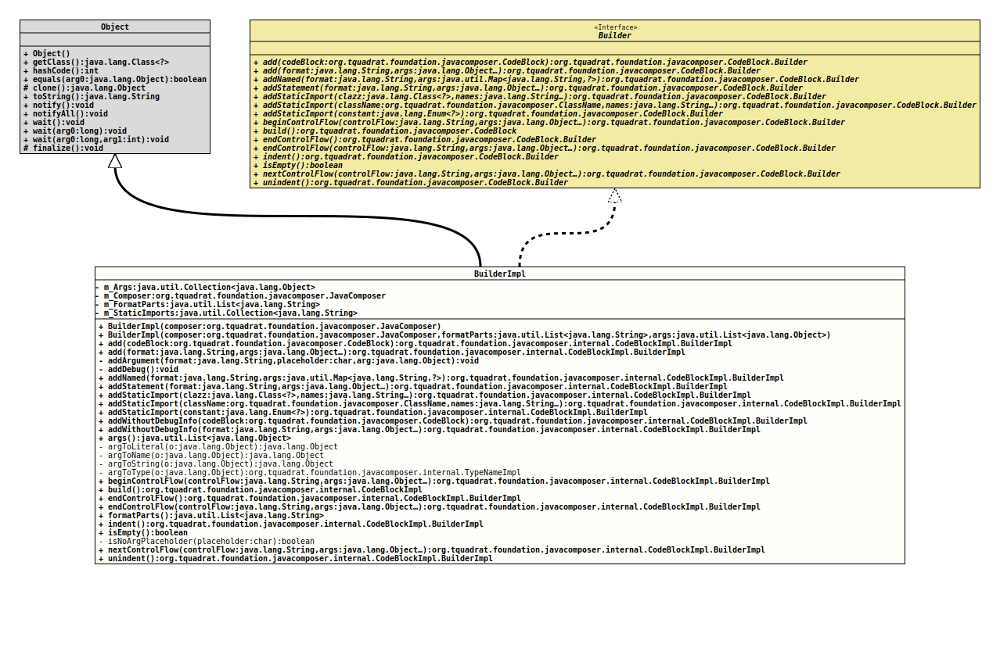

Class CodeBlockImpl.BuilderImpl
- All Implemented Interfaces:
CodeBlock.Builder
- Enclosing class:
CodeBlockImpl
CodeBlock.Builder
as the builder for a new
CodeBlockImpl
instance.- Author:
- Square,Inc.
- Modified by:
- Thomas Thrien (thomas.thrien@tquadrat.org)
- Version:
- $Id: CodeBlockImpl.java 1085 2024-01-05 16:23:28Z tquadrat $
- Since:
- 0.0.5
- UML Diagram
-

UML Diagram for "org.tquadrat.foundation.javacomposer.internal.CodeBlockImpl.BuilderImpl"
{kind=link}
-
Field Summary
FieldsModifier and TypeFieldDescriptionprivate final Collection<Object> The arguments.private final JavaComposerThe reference to the factory.The format Strings.private final Collection<String> The static imports. -
Constructor Summary
ConstructorsConstructorDescriptionBuilderImpl(JavaComposer composer) Creates a newBuilderImplinstance.BuilderImpl(JavaComposer composer, List<String> formatParts, List<Object> args) Creates a newBuilderImplinstance. -
Method Summary
Modifier and TypeMethodDescriptionAdds code with positional or relative arguments.Adds aCodeBlockinstance.private final voidaddArgument(String format, char placeholder, Object arg) Adds the placeholder's argument.private final voidaddDebug()Adds debug output.Adds code using named arguments.addStatement(String format, Object... args) Adds a statement.addStaticImport(Class<?> clazz, String... names) Adds a static import.addStaticImport(Enum<?> constant) Adds a static import for the givenenumvalue.addStaticImport(ClassName className, String... names) Adds a static import.addWithoutDebugInfo(String format, Object... args) Adds code with positional or relative arguments, without prepending any debug output.addWithoutDebugInfo(CodeBlock codeBlock) Adds aCodeBlockinstance without prepending any debug output.args()Returns the arguments.private static final ObjectReturns the given object literally.private static final ObjectTranslates the given object to a name.private static final ObjectTranslates the given object to a String.private static final TypeNameImplTranslates the given object to a type.beginControlFlow(String controlFlow, Object... args) Starts a control flow construct.final CodeBlockImplbuild()Creates theCodeBlockfrom the added components.Ends a control flow construct that was previously begun with a call toCodeBlock.Builder.beginControlFlow(String, Object...).endControlFlow(String controlFlow, Object... args) Ends a control flow construct that was previously started with a call toCodeBlock.Builder.beginControlFlow(String,Object...)orCodeBlock.Builder.beginControlFlow(String,Object...).Returns the format parts.indent()Adds an indentation level to the code block.final booleanisEmpty()Checks whether the code block to build would be empty.private static final booleanisNoArgPlaceholder(char placeholder) Checks whether the given placeholder character would expect an argument.nextControlFlow(String controlFlow, Object... args) Adds another control flow construct to an already existing one.unindent()Removes an indentation level from the code block.
-
Field Details
-
m_Args
The arguments. -
m_Composer
The reference to the factory. -
m_FormatParts
The format Strings. -
m_StaticImports
The static imports.
-
-
Constructor Details
-
BuilderImpl
Creates a newBuilderImplinstance.- Parameters:
composer- The reference to the factory that created this builder instance.
-
BuilderImpl
Creates a newBuilderImplinstance.- Parameters:
composer- The reference to the factory that created this builder instance.formatParts- The format parts.args- The arguments.
-
-
Method Details
-
add
Adds aCodeBlockinstance.- Specified by:
addin interfaceCodeBlock.Builder- Parameters:
codeBlock- The code block.- Returns:
- This
Builderinstance.
-
add
@API(status=INTERNAL, since="0.2.0") public final CodeBlockImpl.BuilderImpl add(String format, Object... args) Adds code with positional or relative arguments.
Relative arguments map 1:1 with the placeholders in the format string.
Positional arguments use an index after the placeholder to identify which argument index to use. For example, for a literal to reference the 3rd argument, use
"$3L"(1 based index).Mixing relative and positional arguments in a call to add is illegal and will result in an error.
- Specified by:
addin interfaceCodeBlock.Builder- Parameters:
format- The format; may be empty.args- The arguments.- Returns:
- This
Builderinstance.
-
addArgument
Adds the placeholder's argument.- Parameters:
format- The format.placeholder- The placeholder character.arg- The argument.
-
addDebug
Adds debug output. -
addNamed
@API(status=INTERNAL, since="0.2.0") public final CodeBlockImpl.BuilderImpl addNamed(String format, Map<String, ?> args) Adds code using named arguments.
Named arguments specify their name after the '$' followed by a colon
":"and the corresponding type character. Argument names consist of characters ina-z, A-Z, 0-9, and _and must start with a lowercase character.For example, to refer to the type
Integerwith the argument nameclazzuse a format string containing$clazz:Tand include the keyclazzwith valuejava.lang.Integer.classin the argument map.- Specified by:
addNamedin interfaceCodeBlock.Builder- Parameters:
format- The format.args- The arguments.- Returns:
- This
Builderinstance.
-
addStatement
@API(status=STABLE, since="0.2.0") public final CodeBlockImpl.BuilderImpl addStatement(String format, Object... args) Adds a statement.
Do not use this method when the resulting code should be used as a field initializer. Use
CodeBlock.Builder.add(String, Object...)instead.- Specified by:
addStatementin interfaceCodeBlock.Builder- Parameters:
format- The format.args- The arguments.- Returns:
- This
Builderinstance. - See Also:
-
addStaticImport
@API(status=STABLE, since="0.2.0") public final CodeBlockImpl.BuilderImpl addStaticImport(Class<?> clazz, String... names) Adds a static import.- Specified by:
addStaticImportin interfaceCodeBlock.Builder- Parameters:
clazz- The class.names- The names of the elements from the given class that are to be imported.- Returns:
- This
Builderinstance.
-
addStaticImport
@API(status=STABLE, since="0.2.0") public final CodeBlockImpl.BuilderImpl addStaticImport(ClassName className, String... names) Adds a static import.- Specified by:
addStaticImportin interfaceCodeBlock.Builder- Parameters:
className- The class.names- The names of the elements from the given class that are to be imported.- Returns:
- This
Builderinstance.
-
addStaticImport
@API(status=STABLE, since="0.2.0") public final CodeBlockImpl.BuilderImpl addStaticImport(Enum<?> constant) Adds a static import for the givenenumvalue.- Specified by:
addStaticImportin interfaceCodeBlock.Builder- Parameters:
constant- Theenumvalue.- Returns:
- This
Builderinstance.
-
addWithoutDebugInfo
Adds aCodeBlockinstance without prepending any debug output.- Parameters:
codeBlock- The code block.- Returns:
- This
Builderinstance.
-
addWithoutDebugInfo
@API(status=INTERNAL, since="0.2.0") public final CodeBlockImpl.BuilderImpl addWithoutDebugInfo(String format, Object... args) Adds code with positional or relative arguments, without prepending any debug output.
Relative arguments map 1:1 with the placeholders in the format string.
Positional arguments use an index after the placeholder to identify which argument index to use. For example, for a literal to reference the 3rd argument, use
"$3L"(1 based index).Mixing relative and positional arguments in a call to add is illegal and will result in an error.
- Parameters:
format- The format; may be empty.args- The arguments.- Returns:
- This
Builderinstance.
-
args
Returns the arguments.- Returns:
- The arguments.
-
argToLiteral
Returns the given object literally.- Parameters:
o- The object.- Returns:
- The literal.
-
argToName
Translates the given object to a name.- Parameters:
o- The object.- Returns:
- The name.
-
argToString
Translates the given object to a String.- Parameters:
o- The object.- Returns:
- The resulting String, or
Util.NULL_REFERENCEif the object isnull.
-
argToType
Translates the given object to a type.- Parameters:
o- The object.- Returns:
- The resulting type.
-
beginControlFlow
@API(status=INTERNAL, since="0.0.5") public final CodeBlockImpl.BuilderImpl beginControlFlow(String controlFlow, Object... args) Starts a control flow construct.- Specified by:
beginControlFlowin interfaceCodeBlock.Builder- Parameters:
controlFlow-The control flow construct and its code, such as
if (foo == 5).Shouldn't contain braces or newline characters.
args- The arguments.- Returns:
- This
Builderinstance. - See Also:
-
build
Creates theCodeBlockfrom the added components.- Specified by:
buildin interfaceCodeBlock.Builder- Returns:
- The new
CodeBlockinstance.
-
endControlFlow
Ends a control flow construct that was previously begun with a call toCodeBlock.Builder.beginControlFlow(String, Object...).- Specified by:
endControlFlowin interfaceCodeBlock.Builder- Returns:
- This
Builderinstance.
-
endControlFlow
@API(status=INTERNAL, since="0.0.5") public final CodeBlockImpl.BuilderImpl endControlFlow(String controlFlow, Object... args) Ends a control flow construct that was previously started with a call to
CodeBlock.Builder.beginControlFlow(String,Object...)orCodeBlock.Builder.beginControlFlow(String,Object...).This form is only used for
do/whilecontrol flows.- Specified by:
endControlFlowin interfaceCodeBlock.Builder- Parameters:
controlFlow- The optional control flow construct and its code, such aswhile(foo == 20).args- The arguments.- Returns:
- This
Builderinstance.
-
formatParts
Returns the format parts.- Returns:
- The format parts.
-
indent
Adds an indentation level to the code block.- Specified by:
indentin interfaceCodeBlock.Builder- Returns:
- This
Builderinstance.
-
isEmpty
Checks whether the code block to build would be empty.- Specified by:
isEmptyin interfaceCodeBlock.Builder- Returns:
trueif the code block would be empty,falseotherwise.
-
isNoArgPlaceholder
Checks whether the given placeholder character would expect an argument.- Parameters:
placeholder- The placeholder character.- Returns:
trueif there is no argument expected,falseotherwise.
-
nextControlFlow
@API(status=INTERNAL, since="0.0.5") public final CodeBlockImpl.BuilderImpl nextControlFlow(String controlFlow, Object... args) Adds another control flow construct to an already existing one.- Specified by:
nextControlFlowin interfaceCodeBlock.Builder- Parameters:
controlFlow-The control flow construct and its code, such as
else if (foo == 10).Shouldn't contain braces or newline characters.
args- The arguments.- Returns:
- This
Builderinstance.
-
unindent
Removes an indentation level from the code block.- Specified by:
unindentin interfaceCodeBlock.Builder- Returns:
- This
Builderinstance.
-